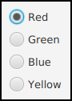

Basic Controls
In preceding sections, you've seen how to use a graphics context to draw on the screen and how to handle mouse events and keyboard events. In one sense, that's all there is to GUI programming. If you're willing to program all the drawing and handle all the mouse and keyboard events, you have nothing more to learn. However, you would either be doing a lot more work than you need to do, or you would be limiting yourself to very simple user interfaces. A typical user interface uses standard GUI components such as buttons, scroll bars, text-input boxes, and menus. These components have already been written for you, so you don't have to duplicate the work involved in developing them. They know how to draw themselves, and they can handle the details of processing the mouse and keyboard events that concern them.
Consider one of the simplest user interface components, a push button. The button has a border, and it displays some text. This text can be changed. Sometimes the button is disabled, so that clicking on it doesn't have any effect. When it is disabled, its appearance changes. When the user clicks on the button, it changes appearance when the mouse button is pressed and changes back when the mouse button is released. In fact, it's more complicated than that. If the user moves the mouse outside the push button before releasing the mouse button, the button changes to its regular appearance, and releasing the mouse at that time will not trigger the button. To implement this, it is necessary to respond to mouse exit or mouse drag events. Furthermore, on many platforms, a button can receive the input focus. The button changes appearance when it has the focus. If the button has the focus and the user presses the space bar, the button is triggered. This means that the button must respond to keyboard and focus events as well.
Fortunately, you don't have to program any of this, provided you use an object belonging to the standard class javafx.scene.control.Button. A Button object draws itself and processes mouse, keyboard, and focus events on its own. You only hear from the Button when the user triggers it by clicking on it or pressing the space bar while the button has the input focus. When this happens, the Button object creates an event object belonging to the class javafx.event.ActionEvent. The event object is sent to any registered listener to tell it that the button has been pushed. Your program gets only the information it needs—the fact that a button was pushed.
Many standard components that are defined as part of the JavaFX graphical user interface API are defined by subclasses of the class Control, from package javafx.scene.control. Controls (with just a couple of exceptions) can be manipulated by the user to generate input and events for the program. A number of useful methods are defined for controls. I begin by mentioning three methods that can be used with any Control control:
- control.setDisable(true) can be called to disable the control. The control can be re-enabled with control.setDisable(false). When a control is disabled, its appearance might change, and it cannot be the target of mouse or key events. This function can actually be called with any scene graph node, not just controls; when you disable a node, any nodes contained inside that node are also disabled. There is a boolean-valued function, control.isDisabled() that you can call to discover whether the control is disabled, either because it was explicitly disabled or because it is inside a container node that was explicitly disabled.
- control.setTooltip(new Tooltip(string)) sets the specified string as a "tool tip" for the control. The tool tip is displayed if the mouse cursor is inside the control and the mouse is not moved for a few seconds. The tool tip should give some information about the meaning of the control or how to use it.
- control.setStyle(cssString) sets the CSS style of the control. CSS was discussed in Subsection 6.2.5.
Note that using a control, or any scene graph node, is a multi-step process. The component object must be created with a constructor. It must be added to a container. In many cases, a listener must be registered to respond to events from the component. And in some cases, a reference to the component must be saved in an instance variable so that the component can be manipulated by the program after it has been created. In this section, we will look at a few of the basic standard control components that are available in JavaFX. They are all defined by classes in the package javafx.scene.control. In the next section we will consider the problem of laying out components in containers.
ImageView
But before we turn to controls, I want to mention one other node type: ImageView from package javafx.scene.image. Recall from Subsection 6.2.3 that an Image object represents a picture, and that images can be loaded from resource files. An Image can be drawn on a Canvas, but an Image is not a Node. That is, it can't be part of a scene graph.
An ImageView is a scene graph node that is a simple wrapper for an image. Its purpose is simply to display the image. It makes it possible to add the image to a scene graph without having to draw the image on a canvas. The image can be specified as a parameter to the ImageView constructor. For example, suppose that "icons/tux.png" is the path to an image resource file. Then an ImageView can be created to display the image like this:
Image tux = new Image("icons/tux.png");
ImageView tuxIcon = new ImageView( tux );In this case, I am thinking of the image as an "icon," that is, a small image that is typically used on a button, label, or menu item to add a graphical element to the usual plain text. In fact, we'll see that you can do exactly that in JavaFX.
Label and Button
The first four controls that we will look at have something in common: They all display a string of text to the user, which the user can view but not edit. Furthermore they can all display a graphical element in addition to or instead of the text. The graphic can be any Node but is usually a small icon, implemented as an object of type ImageView. In fact, all four types of controls inherit their behavior from a common superclass named Labeled. In Subsection 6.6.2, we look at menu items, which also inherit from Labeled. That class defines a number of instance methods that can be used with labels, buttons, and other labeled controls. Those methods include:
- setText(string) for setting the text that is displayed on the control. The text can be multi-line. The new line character, "\n", in the string represents a line break.
- setGraphic(node) for setting the control's graphical element.
- setFont(font) for setting the font that is used for the text.
- setTextFill(color) for setting the paint that is used for drawing the text.
- setGraphicTextGap(size) for setting the amount of space that is put between the text and the graphic. The parameter is of type double.
- setContentDisplay(displayCode) for setting where the graphic should be placed with respect to the text. The parameter is a constant from an enum, ContentDisplay, such as ContentDisplay.LEFT, ContentDisplay.RIGHT, ContentDisplay.TOP or ContentDisplay.BOTTOM.
All of these setter methods have corresponding getters, such as getText() and getFont(). I have not listed a setter method for the background color. It is possible to set a background color, but it's cumbersome. (Setting the background color of a control, c, to white looks like this:
c.setBackground(new Background(new BackgroundFill(Color.WHITE,null,null)));where Background and BackgroundFill are in package javafx.scene.layout.) It is more easily done by setting the CSS style of the control with the setStyle() method. CSS is also useful for setting the border and for setting padding (the amount of empty space left around the content).
A Label is certainly the simplest type of control. It adds almost nothing to the Labeled class. Its purpose is simply to display some unedited text and/or a graphic to the user. The label class has two constructors. The first has one parameter of type String specifying the text for the label. The second adds a parameter of type Node specifying a graphic for the label. For example, assuming that tuxIcon is the ImageView object from the previous subsection,
Label message = new Label("Hello World");
Label linuxAd = new Label("Choose Linux First!", tuxIcon);The default background of a label is completely transparent, and the label has no border or padding by default. Often I would like to add at least some padding. Here is an example of setting all three properties using CSS:
message.setStyle("-fx-border-color: blue; -fx-border-width: 2px; " +
"-fx-background-color: white; -fx-padding: 6px");You've already seen buttons used in Section 6.1. A Button, like a Label, displays some text and/or a graphic to the user, and the Button class, like the Label class, has two constructors:
Button stopButton = new Button("Stop");
Button linuxButton = new Button("Get Linux", tuxIcon);When the user clicks a button, an event of type ActionEvent is generated. You can register an event handler for the action with the button's setOnAction method. For example,
stopButton.setOnAction( e -> animator.stop() );In addition to the methods inherited from Labeled, a button has the instance methods setDisable(boolean) and setToolTip(string) that were mentioned at the beginning of this section. The setDisable() and setText() methods are particularly useful for giving the user information about what is going on in the program. A disabled button is better than a button that gives an obnoxious error message such as "Sorry, you can't click on me now!" For example, suppose that we want to use two buttons to start and stop an AnimationTimer, animator. When the animation is running, the start button should be disabled, and when the animation is paused, the stop button should be disabled. The code for this might look like:
Button startButton = new Button("Run Animation");
Button stopButton = new Button("Stop Animation");
stopButton.setDisable(true); // Stop button is initially disabled.
startButton.setOnAction( e -> {
animator.start();
startButton.setDisable(true);
stopButton.setDisable(false);
} );
stopButton.setOnAction( e -> {
animator.stop();
startButton.setDisable(false);
stopButton.setDisable(true);
} );This ensures that the user can't try to start the animation when it is already started or stop it when it is already stopped.
Often, there is a button that triggers some default action in a program. For example, the user might enter data into some text input boxes and then click a "Compute" button to process the data. It would be nice if the user could just press Return when done typing, instead of having to click the button. In JavaFX, you can make a Button, button, into the default button for the window that contains it by calling
button.setDefaultButton(true);When a window has a default button, then pressing the Return (or Enter) key on the keyboard is equivalent to clicking the default button, unless the key event generated by the Return key is consumed by another component. This can be very convenient for the user.
CheckBox and RadioButton
A CheckBox is a component that has two states: selected or unselected. (Being "selected" means that the checkbox is checked.) The user can change the state of a check box by clicking on it. The state of a checkbox is represented by a boolean value that is true if the box is selected and is false if the box is unselected. A checkbox has a label, which is specified when the box is constructed:
CheckBox showTime = new CheckBox("Show Current Time");CheckBox is a subclass of Labeled, so a checkbox can also have a graphic, and all the instance methods from the Labeled class can also be used with checkboxes. (There is no constructor that specifies a graphic for the checkbox; any graphic has to be set by calling setGraphic(node).)
Usually, it's the user who sets the state of a CheckBox by clicking on it, but you can also set the state programmatically. The current state of a checkbox is set using its setSelected(boolean) method. For example, if you want the checkbox showTime to be checked, you would say "showTime.setSelected(true)". To uncheck the box, say "showTime.setSelected(false)". You can determine the current state of a checkbox by calling its isSelected() method, which returns a boolean value.
In many cases, you don't need to worry about events from checkboxes. Your program can just check the state whenever it needs to know it by calling the isSelected() method. However, a checkbox does generate an event when its state is changed by the user, and you can detect this event and respond to it if you want something to happen at the moment the state changes. When the state of a checkbox is changed by the user, it generates an event of type ActionEvent. If you want something to happen when the user changes the state, you must register a handler with the checkbox by calling its setOnAction() method. (Note that if you change the state by calling the setSelected() method, no ActionEvent is generated. However, there is another method in the CheckBox class, fire(), which simulates a user click on the checkbox and does generate an ActionEvent.)
It is actually possible for a checkbox to be in a third state, called "indeterminate," although that possibility is turned off by default. See the API documentation for details.
Closely related to checkboxes are radio buttons. Like a checkbox, a radio button can be either selected or not. However, radio buttons are expected to occur in groups, where at most one radio button in a given group can be selected at any given time. Radio button groups let the user select one choice among several alternatives. In JavaFX, a radio button is represented by an object of type RadioButton. When used in isolation, a RadioButton acts just like a CheckBox, and it has the same constructor, methods, and events, including methods inherited from Labeled. Ordinarily, however, a RadioButton is used in a group. A group of radio buttons is represented by an object belonging to the class ToggleGroup. A ToggleGroup is not a component and does not itself have a visible representation on the screen. A ToggleGroup works behind the scenes to organize a group of radio buttons, to ensure that at most one button in the group can be selected at any given time.
To use a group of radio buttons, you must create a RadioButton object for each button in the group, and you must create one object of type ToggleGroup to organize the individual buttons into a group. Each RadioButton must be added individually to the scene graph, so that it will appear on the screen. (A ToggleGroup plays no role in the placement of the buttons on the screen.) Each RadioButton must also be added to the ToggleGroup. You do that by calling the radio button's setToggleGroup(group) instance method. If you want one of the buttons to be selected initially, you can call setSelected(true) for that button. If you don't do this, then none of the buttons will be selected until the user clicks on one of them.
As an example, here is how you could set up a group of radio buttons that can be used to select a color:
RadioButton redRadio, blueRadio, greenRadio, yellowRadio;
// Variables to represent the radio buttons.
// These might be instance variables, so that
// they can be used throughout the program.
ToggleGroup colorGroup = new ToggleGroup();
redRadio = new RadioButton("Red"); // Create a button.
redRadio.setToggleGroup(colorGroup); // Add it to the ToggleGroup.
blueRadio = new RadioButton("Blue");
blueRadio.setToggleGroup(colorGroup);
greenRadio = new RadioButton("Green");
greenRadio.setToggleGroup(colorGroup);
yellowRadio = new RadioButton("Yellow");
yellowRadio.setToggleGroup(colorGroup);
redRadio.setSelected(true); // Make an initial selection.As an alternative to calling redRadio.setSelected(true), you can use the selectToggle() instance method in the ToggleGroup class to select the radio button:
colorGroup.selectToggle( redRadio );Just as for checkboxes, it is not always necessary to register listeners for radio buttons. You can test the state of an individual RadioButton by calling its isSelected() method, or you can call the toggle group's getSelectedToggle() method. The return type of this method is Toggle, which is an interface implemented by RadioButton. For example:
Toggle selection = colorGroup.getSelectedToggle();
if (selection == redRadio) {
color = Color.RED;
}
else if (selection == greenRadio){
.
.
.Here's what these radio buttons look like, lined up vertically in a container:

TextField and TextArea
The TextField and TextArea classes represent components that contain text that can be edited by the user. A TextField holds a single line of text, while a TextArea can hold multiple lines. It is also possible to set a TextField or TextArea to be read-only so that the user can read the text that it contains but cannot edit the text. Both classes are subclasses of an abstract class, TextInputControl, which defines their common properties.
TextField and TextArea have many methods in common. The instance method setText(text), which takes a parameter of type String, can be used to change the text that is displayed in an input component. The contents of the component can be retrieved by calling its getText() instance method, which returns a value of type String. You can add a String of text onto the end of the text that is already in the component by calling the instance method appendText(text). The text in the setText() and appendText() methods can include "\n" characters to represent line breaks; in a TextField they will be ignored. The instance method setFont(font) can be used to change the font that is used in the text component.
If you want to stop the user from modifying the text, you can call setEditable(false). Call the same method with parameter true to make the input component user-editable again.
The user can only type into a text component when it has the input focus. The user can give the input focus to a text component by clicking it with the mouse, but sometimes it is useful to give the input focus to a text field programmatically. You can do this by calling its requestFocus() method.
A substring of the text in a text component can be "selected." The selected text is highlighted and can be cut or copied from the text component. (The user can right-click in the component to bring up a pop-up menu of editing commands.) TextInputComponent has several instance methods for working with the text selection, but I only mention one of them: selectAll(), which selects the entire string of text in the text component.
For example, when I discover an error in the user's input in a TextField, input, I usually call both input.requestFocus() and input.selectAll(). This helps the user see where the error occurred and lets the user start typing the correction immediately. If the user starts typing, the old text in the input box, which is highlighted, will automatically be deleted.
Both the TextField class and the TextArea class have two constructors. One of the constructors has no parameter and makes an initially empty text input box. The second constructor takes a parameter of type String, specifying the initial content of the box.
A TextField has a preferred number of columns, which by default is 12. This determines the preferred width of the text field, that is, the size that is used if the size is not reset by the program or when the text field is laid out by a container. The preferred number of columns for a TextField, input, can be changed by calling input.setPrefColumnCount(n), where n is a positive integer.
Similarly, a TextArea has both a preferred number of columns and a preferred number of rows, which by default are 40 and 10. The value can be changed using the TextArea instance methods setPrefColumnCount(n) and setPrefRowCount(n).
The TextArea class adds a few useful methods to those inherited from TextInputControl, including some methods for getting and setting the amount by which the text has been scrolled. Most important is setWrapText(wrap), where wrap is of type boolean. This method says what should happen when a line of text is too long to be displayed in the text area. If wrap is true, then any line that is too long will be "wrapped" onto the next line, with the line break occurring between words if possible; if wrap is false, the line will simply extend outside the text area, and the user will have to scroll the text area horizontally to see the entire line. The default value of wrap is false.
Since it might be necessary to scroll a text area to see all the text that it contains, a TextArea comes with scroll bars. The scroll bars are visible only when they are needed because the text cannot fit in the available space.
See the sample program TextInputDemo.java for a short example of using a text field and a text area. Here is the window from that program, after the text has been edited and scrolled down a few lines:
(I pasted the source code of the program into the text area!)
Slider
A Slider provides a way for the user to select an integer value from a range of possible values. The user does this by dragging a "knob" along a bar, or by clicking at some point along the bar. A slider can, optionally, be decorated with tick marks and with labels. This picture, from the sample program SliderDemo.java, shows three sliders with different decorations and with different ranges of values:

Here, the second slider is decorated with tick marks, and the third one is decorated with labels. It's possible for a single slider to have both types of decorations.
The most commonly used constructor for Sliders specifies the start and end of the range of values for the slider and its initial value when it first appears on the screen:
public Slider(double minimum, double maximum, double value)If the parameters are omitted, the values 0, 100, and 0 are used. By default, a slider is horizontal, but you can make it vertical by calling its method setOrientation(Orientation.VERTICAL). Orientation is an enum from package javafx.geometry.
The current value of a Slider can be read at any time with its getValue() method, which returns a value of type double. If you want to change the value programmatically, you can do so with the method setValue(val), which takes a parameter of type double. If the specified value is not between the minimum and maximum slider values, it is adjusted to lie in that range.
If you want to respond immediately when the user changes the value of a slider, you can register a listener with the slider. Sliders, unlike other components we have seen, do not generate ActionEvents. Instead, they have an observable property of type Double that represents the value. (See Subsection 6.3.7.) You can access the value property of a Slider, slider, by calling slider.valueProperty(), and you can add a listener to the property that will be called whenever the value changes. For example, in the sample program, I add listeners to the sliders with commands such as
slider1.valueProperty().addListener( e -> sliderValueChanged(slider1) );The listener will be called whenever the value changes, either because the user is dragging the knob on the slider or because the program calls setValue(). If you want to know whether the user generated the event by dragging the slider's knob, call the slider's boolean-valued isValueChanging() method, which returns true if the user is dragging the knob.
Using tick marks on a slider is a two-step process: Specify the interval between the tick marks, and tell the slider that the tick marks should be displayed. There are actually two types of tick marks, "major" tick marks and "minor" tick marks. You can have one or the other or both. Major tick marks are a bit longer than minor tick marks. The method setMajorTickSpacing(x) indicates that there should be a major tick mark every x units along the slider. The parameter is of type double. (The spacing is in terms of values on the slider, not pixels.) To control the minor tick marks, you can call setMinorTickCount(n). The parameter is an int that specifies how many minor tick marks are placed between consecutive major tick marks. The default value is 4. If you don't want minor tick marks, set the count to zero. Calling these methods is not enough to make the tick marks appear. You also have to call setShowTickMarks(true). For example, the second slider in the sample program was created and configured using the commands:
slider2 = new Slider(); // Use default values (0,100,0)
slider2.setMajorTickUnit(25); // space between big tick marks
slider2.setMinorTickCount(5); // 5 small tick marks between big tick marks.
slider2.setShowTickMarks(true);
Labels on a slider are handled similarly. A label will be placed at every major tick mark, but some labels will be omitted if they would overlap. To see the labels, you need to call setShowTickLabels(true). For example, the third slider in the above illustration was created and configured to show labels with the commands:
slider3 = new Slider(2000,2100,2022);
slider3.setMajorTickUnit(50); // tick marks are not shown!
slider3.setShowTickLabels(true)The value of a slider is of type double. You might want to restrict the value to be an integer, or to be some multiple of a given value. What you can do is call slider.setSnapToTicks(true). After the user finishes dragging the slider's knob, the value will be moved to the value at the nearest major or minor tick mark, even if the tick marks are not visible. The value will not be restricted while the user is dragging the knob; the value is just adjusted at the end of the drag. The value set by calling setValue(x) is also not restricted, but there is another method, adjustValue(x), that will set the value to the value at the tick mark nearest to x. For example, if you want a slider to snap to integral values in the range 0 to 10, you could say:
Slider sldr = new Slider(0,10,0);
sldr.setMajorTickUnit(1); // major ticks 1 unit apart
sldr.setMinorTickCount(0); // no minor tick marks
sldr.setSnapToTicks(true);In the sample program, the third slider has been configured to snap to an integer value at the end of a drag operation.